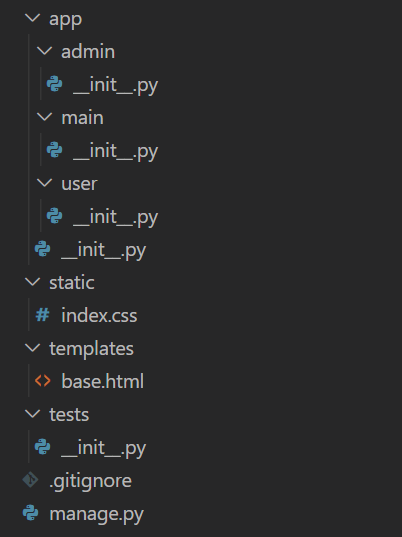

前言
差不多要開始寫專案了，今天要來看一下我們專案的目錄結構，也會提到一些特別的檔案和目錄，包括之前提到的 templates。
差不多要開始寫專案了，今天要來看一下我們專案的目錄結構，也會提到一些特別的檔案和目錄，包括之前提到的 templates。
在開始看目錄結構之前，我們必須先解釋何謂工廠模式 (factory pattern)。
工廠模式是指我們用一個函式來建立全部我們可能需要的 app。舉例來說，當我們現在是 development 狀態，那我們可以透過一個函式製造出符合現在需求的
app；如果要做測試，那也可以用一樣的函式不一樣的參數去製造另一個 app。而同時我們也可以在這個函式做一些該有的初始化，像是資料庫等等。
知道他大概的運作方式後，我們就來看看他的目錄結構。

首先 .gitignore 是 git 的東西，可以直接無視。剩下的我們一層一層來解說，有 / 後綴的代表是目錄。
app/ 是這個專案最重要的部分，基本上就是核心程式碼的所在之處。它裡面又有三個目錄，分別是
admin/、main/、user/，他們各自代表一個 (也可以不只一個，但我們使用一個就好) 藍圖
(blueprint)，一個藍圖基本上就是一堆路徑組合起來的，我們會把有類似關係的路徑放在同一個藍圖中。而這三個目錄中都有 __init__.py，代表他們都是
package，藍圖的物件最後都會從他們引入然後讓 app 去 register。接下來看到 app/ 中的
__init__.py，上面提到拿來製造 app 的函式就會寫在這裡面，所以這裡面會引入很多 extension，因為需要初始化。
static/ 是昨天說留給今天的部分，我們的 CSS、JS 檔案都會放在這裡，此外，一些圖片什麼的也可以放在這裡，簡單來說就是各種 flask 不會去改動的檔案。
templates/ 在前幾天說過了，他是用來放 HTML 模板和 jinja 檔案的目錄。現在裡面已經放著昨天寫好的 base.html 了。
tests/ 是用來放測試檔案的地方，我們很快就會用到了。他也有 __init__.py，所以也是一個 package。
manage.py 是一個定義指令的地方，讓我們可以用 flask 這個指令 (之前 flask run 的那個
flask) 來操縱和管理，也是很快就會遇到的檔案。